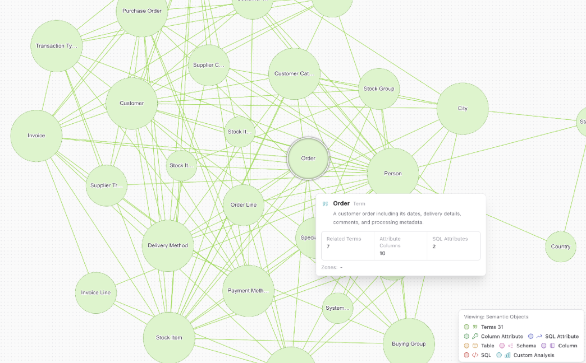

Auto Ontology
NVIDIA's tool that teaches AI to ask your databases the right questions - and show its work.
Maps your business terms to database columns so an AI agent answers 'What was revenue last quarter?' with the right query, the SQL it wrote, and why.

How does it work?
AI agents guess at your database structure and write wrong queries, or you spend hours writing SQL (database queries) by hand.
Type a business question in the Auto Ontology chat window, or call it from another tool through its server.
A question like 'What was total revenue for WidgetCo in New York last quarter?'
Classifies the question, retrieves matching business terms from the map, writes a database query, and validates it before running.
- Classifies your question and finds the matching business terms in the meaning map
- Writes a database query against the actual table and column names
- Validates the query before running it
- Returns the answer with the query it wrote and the reasoning chain
The answer, the query that produced it, and a refusal when the data doesn't exist.
- A sourced answerRevenue: $4.2M, with the SQL query and reasoning shown (from the project's documentation)
- An honest 'I can't answer that''I can't answer ad-spend questions because the connected data doesn't contain advertising data'
What changes for me?
Without it
- An AI guesses column names and joins, producing wrong numbers you don't catch
- You write database queries by hand or ask a data analyst and wait
With it
- A business question returns an answer, the query, and the reasoning - all auditable
- When the data doesn't exist, the system says so instead of making something up
How hard is it to try?
Effort
- Clone the repo and copy
.env.exampleto.env, then add an NVIDIA API key - Run
docker compose up --build(needs Docker with Compose v2) - Open localhost:3000 in your browser, connect a sample database, and ask a question in the chat
What it takes on your computer
- Space on disk
- no data found (runs via Docker images; no releases published)
- Memory while it runs
- no data found (runs PostgreSQL 17 + pgvector, a web server, a Python API server, and model calls)
- Runs on
- Any OS with Docker Compose v2 (or Kubernetes via Helm chart)
Paste this into Claude Code. It runs your safety scan first, then a 10-minute test.
/skillspector https://github.com/NVIDIA/auto-ontology Then: Clone the repo, copy .env.example to .env, add your NVIDIA API key, run `docker compose up --build`, open localhost:3000 and try a revenue question. 10 minutes (Docker pull may take longer).
Should I?
Great if you...
- Data teams that want AI to write accurate, auditable database queries from business questions
- Companies that need a meaning layer between business terms and database columns
- Teams building internal tools where non-technical people ask data questions
Skip it if...
- You don't have databases to connect - this is a data tool, not a general AI assistant
- You need a one-click install - this requires Docker, an NVIDIA API key, and configuration
- You want to modify the code - NVIDIA is not accepting code contributions, only issues
Is it safe?
- Security advisories: 0GitHub's advisory list, checked Nov 6
- Searches for CVEs, vulnerabilities, malware and scams0 results read, including the national CVE database: nothing found
- Are the stars earned?8.3K stars, 13 contributors, 1.4K commits
Watch out for
- Requires Docker and an NVIDIA API key. Not a one-click install - you need Docker Compose v2 and a free key from build.nvidia.com.
- Not accepting code contributions. NVIDIA takes issues and integration requests only.
- KumoRFM predictive features upload your tables to a hosted service (default cap of 20 tables). Disable if that's a concern.
- The data intake endpoints have no login wall. Ports 3001-3002 should stay on a private network, not the open internet.
Who's using it, and for what?
No independent user reports found. The project is 193 days old with 8.3K stars and 666 forks, but real adoption evidence is thin - this is a framework aimed at enterprise data teams.
We couldn't find anyone describing real use of it yet. That's normal for a brand-new repo, and it's worth knowing.
Who's talking about it
- Hacker NewsNvidia - open-source auto-ontology
- GitHub TrendingTrending (daily)
- findarepoListed in Nov digests
Sources
- Auto Ontology GitHub, Nov 6
- Hacker News discussion, Nov 3